1. АЛОМАТҲОИ ОГОҲКУНАНДА
1.1 "Гузаргоҳи роҳи оҳан бо ғавчўб"
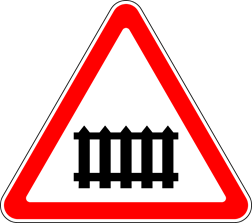
1.1
1.2 "Гузаргоҳи роҳи оҳан бе ғавчўб"
1.1
1.3.1 "Роҳи оҳани якхатта"
1.3.1
1.3.2. "Роҳи оҳани бисёрхатта"
Гузаргоҳи роҳи оҳани бо ғавчўб таҷҳизонида нашуда ишорат карда мешавад: 1.3.1 - якхатта, 1.3.2 – духатта ва зиёда аз он.

1.3.2
1.4 "Наздикшавӣ ба гузаргоҳи роҳи оҳан"
Огоҳии иловагӣ оид ба наздикшавӣ ба гузаргоҳи роҳи оҳан берун аз маҳаллаҳои аҳолинишин. Аломатҳои 1.4.1-1.4.3 дар тарафи рост ва аломатҳои 1.4.4 - 1.4.6 дар тарафи чапи роҳ гузошта мешаванд.
1.4.1 1.4.2 1.4.3
1.4.4 1.4.5 1.4.6
1.5 "Бурида гузаштани хатти трамвай"

1.5
1.6 "Якдигарро бурида гузаштани роҳҳои аҳамияташон баробар"
Наздикшавӣ ба ҷойи бурида гузаштани роҳҳои аҳамияташон баробар, ки талаботи банди 165 ҳамин Қоидаҳо амал мекунад.
1.6
1.7 "Ҷойи бурида гузаштани ҳаракати давродавр"

1.7
1.8 "Танзим бо чароғаки роҳнамо"
Чорроҳа, гузаргоҳи пиёдагард ё қитъаи роҳе, ки дар он ҳаракат бо чароғаки роҳнамо танзим мегардад.
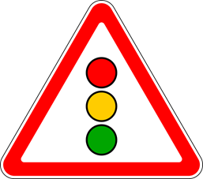
1.8
1.9 "Пули миёнҷудо"
Пули миёнҷудо ё гузаргоҳи паром.
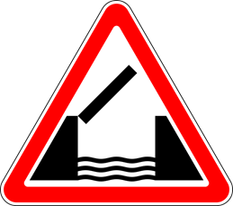
1.9
1.10 "Баромад ба соҳил"
Баромадан ба маҳалли назди соҳил ё ба соҳил.
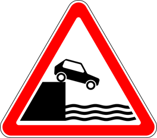
1.10
1.11.1, 1.11.2 "Гардиши хатарнок"
Гардиши роҳ бо радиуси хурд ё дидашавандагии маҳдуд: 1.11.1 - ба дасти рост, 1.11.2 - ба дасти чап.
1.11.1
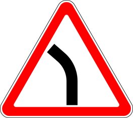
1.11.2
1.12.1, 1.12.2 "Гардишҳои хатарнок"
Қитъаи роҳ бо гардишҳои хатарнок: 1.12.1 - бо гардиши якум ба дасти рост, 1.12.2 - бо гардиши якум ба дасти чап.
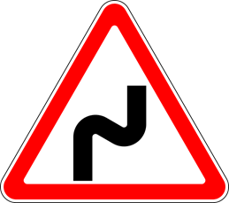
1.12.1
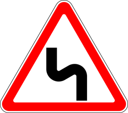
1.12.2
1.13 "Нишебии тез"
1.13
1.14 "Кўтали фароз"
Нишебӣ ё кўтал, ки дар онҳо талаботи махсуси Қоидаҳои ҳаракат дар роҳ оид ба тартиби ҳаракат дар нишебиҳои тез ва кўталҳои фароз амал мекунад. Аломатҳои 1.13, 1.14 метавонанд бе лавҳачаи 7.1.1 бевосита пеш аз оғози нишебӣ ё кўтал гузошта шаванд, агар онҳо паси ҳам такрор шаванд.
1.14
1.15 "Роҳи лағжонак"
Қитъаи роҳе, ки қисми мошингарди он лағжонакии баланд дорад.
1.15
1.16 "Роҳи ноҳамвор"
Қитъаи роҳе, ки дар қисми мошингарди он ноҳамвориҳо (ноҳамвории мавҷмонанд, барҷастагиҳо, ҷойҳои чўкида, пайвастагиҳои моилнабуда бо пулҳо ва монанди инҳо) доранд.
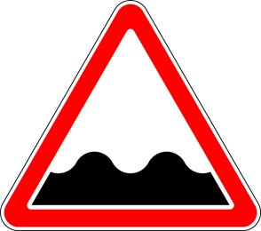
1.16
1.17 "Регпарто"
Қитъаи роҳе, ки дар он имкони аз зери чархи воситаҳои нақлиёт паридани сангреза, шағал ва монанди инҳо мавҷуд аст.
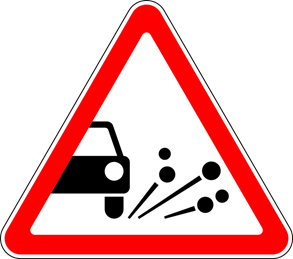
1.17
1.18.1-1.18.3 "Тангшавии роҳ"
1.18.1 - тангшавӣ аз ҳарду тараф, 1.18.2- тангшавӣ аз тарафи рост, 1.18.3 - тангшавӣ аз тарафи чап.
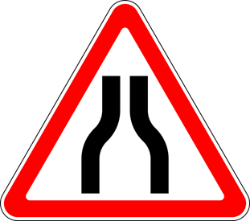
1.18.1
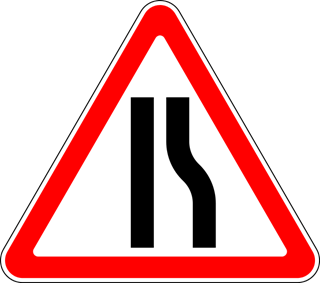
1.18.2
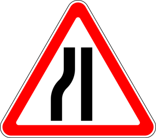
1.18.3
1.19 "Ҳаракати дутарафа"
Аввали қитъаи роҳ (қисми мошингард), бо ҳаракати муқобил.
1.19
1.20 "Гузаргоҳи пиёдагард"
Гузаргоҳи пиёдагарде, ки бо аломатҳои 5.16.1, 5.16.2 ва (ё) нишонаи 1.14.1 - 1.14.2 ишорат шудааст.
1.20
1.21 "Кўдакон"
Қитъаи роҳи наздик ба муассисаи кўдакона (мактаб, лагери солимгардонӣ ва монанди инҳо), ки дар қисми мошингарди он пайдо шудани кўдакон имкон дорад.
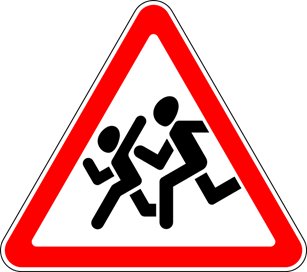
1.21
1.22 "Буриш бо пайроҳаи велосипедгард"
1.22
1.23 "Корҳои роҳсозӣ"
1.23
1.24 "Рондани чорво"
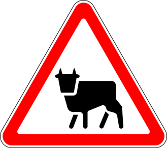
1.24
1.25 "Ҳайвоноти ваҳшӣ"
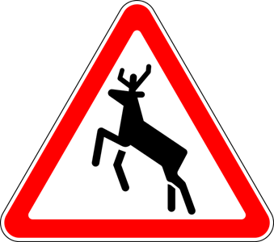
1.25
1.26 "Афтиши сангҳо"
Қитъаи роҳе, ки дар он фурўравӣ, ярч, афтиши сангҳо имкон дорад.
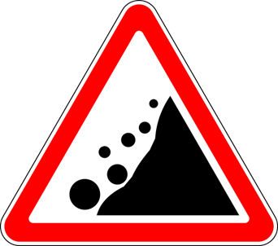
1.26
1.27 "Шамоли паҳлуӣ"
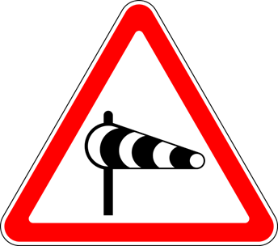
1.27
1.28 "Тайёраҳои пастпарвоз"
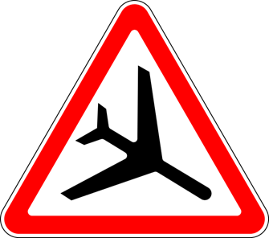
1.28
1.29 "Нақб"
Нақбе, ки дар он равшании сунъӣ мавҷуд нест ё нақбе, ки дидашавандагӣ дар даромадгоҳи он маҳдуд аст.
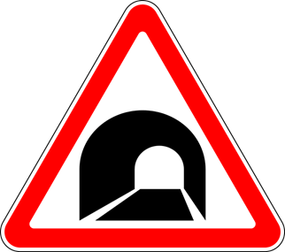
1.29
1.30 "Хатарҳои дигар"
Қитъаи роҳе, ки дар он хатарҳои бо дигар аломатҳои огоҳкунанда пешбининашуда мавҷуданд.
1.30
1.31.1, 1.31.2 "Самти гардиш"
Самти ҳаракат дар каҷии радиусаш хурди роҳ бо дидашавандагии маҳдуд. Самти гузаштан аз паҳлуи қитъаи роҳи таъмиршаванда.
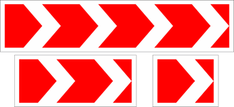
1.31.1
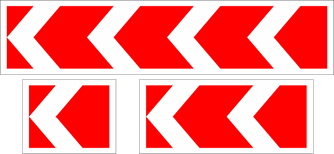
1.31.2
1.31.3 "Самти гардиш"
Самти ҳаракат дар чорроҳаи "Т"- шакл ё ҷойи ҷудошавии роҳҳо. Самти гузаштан аз паҳлуҳои қитъаи роҳи таъмиршаванда.
1.31.3
1.32 "Роҳбандон"
Минтақаи роҳ, ки дар он роҳбандон ба амал омадааст.
1.32
1.33 "Канори роҳи хатарнок"
Минтақаи роҳ, ки дар он ба канори роҳ фуромадан хатарнок аст.
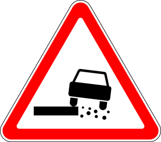
1.33
1.34 "Ноҳамвории сунъӣ"
Минтақаи роҳ бо ноҳамвории (ноҳамвориҳои) сунъӣ барои маҷбуран паст намудани суръат.
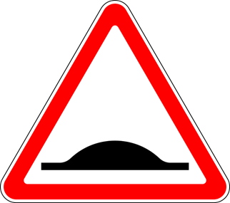
1.34
1.35 "Минтақаи хатарноки садамавӣ"
Аз наздикшавӣ ба қитъаи роҳ, ки дар он зуд - зуд ҳодисаҳои роҳу нақлиёт ба амал меоянд, огоҳ месозад. Аломат мумкин аст бо яке аз ин лаҳвачаҳо 7.27.1 - 7.27.4, ки намуди хатарро нишон медиҳанд, гузошта шавад.
1.35
Аломатҳои огоҳкунандаи 1.1, 1.2, 1.5-1.30, 1.32 - 1.34 берун аз маҳаллаҳои аҳолинишин дар масофаи 150 - 300 метр ва дар маҳаллаҳои аҳолинишин - дар масофаи 50-100 метр то оғози қитъаи хатарнок гузошта мешаванд. Ҳангоми зарурат аломатҳоро дар масофаи дигар низ гузоштан мумкин аст, дар ин ҳолат масофа дар лавҳачаи 7.1.1 нишон дода мешавад.
Аломатҳои 1.13 ва 1.14 бе лавҳачаи 7.1.1 бевосита пеш аз аввали нишебӣ ё баландӣ, агар нишебиҳо ва баландиҳо пайи ҳам такрор шаванд, гузошта мешаванд.
Аломати 1.23 ҳангоми иҷрои корҳои кўтоҳмуддат дар қисми мошингард мумкин аст (бе лавҳачаи 7.1.1) дар масофаи 10-15 метр то ҷойи иҷрои корҳо гузошта шавад.
Аломатҳои 1.1, 1.2, 1.9, 1.10, 1.21, 1.23 ва 1.34 берун аз маҳаллаҳои аҳолинишин такрор мешаванд. Аломати дуюми онҳо дар масофаи на камтар аз 50 метр то оғози қитъаи хатарнок гузошта мешавад.
Аломатҳои 1.21 ва 1.23 дар маҳалҳои аҳолинишин бевосита пеш аз оғозшавии минтақаи хатарнок такрор мешаванд.
Аломатҳои 1.3.1 ва 1.3.2 бевосита пеш аз гузаргоҳи роҳи оҳан гузошта мешаванд.
Аломати 1.32 ба сифати муваққатӣ ё дар аломатҳои тасвирашон ивазшаванда, пеш аз чорроҳае, ки аз он ҷой аз паҳлуи минтақаи роҳи роҳбандоншуда гузаштан имконият дорад, истифода мешавад.